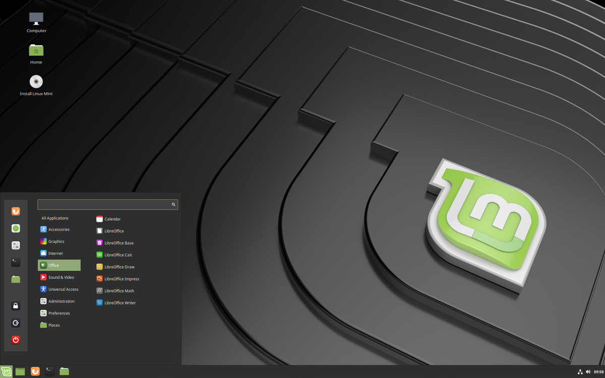
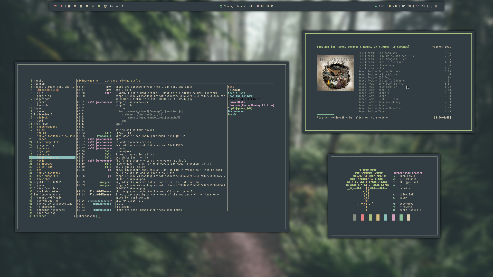
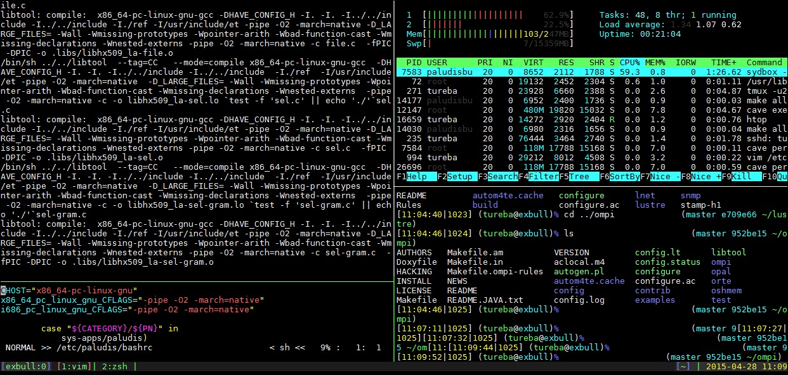

Intro to Linux
Linux is a computer operating system (OS). Windows and MacOS are also OSes. However, Linux is different than those OSes in numerous ways. It's insufficient to simply say that Linux is an OS, as there is much more to say about it.
Here's an example of what a Linux desktop could look like.

However, it doesn't have to look like that. You could make it look like this:

Or even this!:

Don't be intimidated by the terminal in the above images. It's fine if you don't know what it is. In fact, in this article I may mention terms you've never heard of, but that's totally okay. I'm going to gloss over many concepts right now, but we will learn them in more detail later.
Why to use Linux?
1. Free
It's completely free to install and use. For Windows, you have to pay a license fee (like a $100 or so) which is usually included in the cost of your computer. Since Linux is free, you can install it by yourself on your computer without paying.
But that's not all that I mean by “free”. The source code for Linux is “open source”. This means that anyone can view the code that makes Linux work. It also has no copyright restrictions. You are free to copy, modify, and distribute it as you wish. Even if you aren't a programmer, someone else is, and you'd be surprised how much of a difference that makes. I'll explain this in more detail later.
2. Extensible
This is a buzzword that's thrown around a lot, so let me be specific. In Linux, you are able to use a command line to do regular computer stuff. The command line seems scary at first, but in reality, it's very simple and usable. You can automate frequent tasks, and use text files, streams, and pipes to do stuff you would have never imagined was possible. It's just easier to do complex (and normal) stuff once you learn how to use it. There's a pithy quote that sums it up in a amusing way:
“GUIs make difficult things easy, and easy things impossible”.
3. Customisable
Not just customisable in the sense that you can change the wallpaper, or change the location of the dock, but rather you can change any aspect of your system. For ex. you can change the window manager, set custom keybindings (to do virtually anything you want), use whichever software you want, etc)
4. Lightweight
By ‘Lightweight’ I mean that it can run on old hardware. Got an old laptop catching dust in the closet? It can run Linux, and it can run it well. Personally, I first installed Linux since the hand-me-down laptop that my dad gave me was incapable of running Windows. I installed Linux on it, and it ran smoother than butter.
5. Efficiency
You can customize your workflow to be tailored to you, so you can be as efficient as possible. One popular thing among Linux users is to control your computer using only the keyboard. Switching windows, opening programs, browsing files, editing text, everything can be done using keyboard shortcuts. This eliminates the need to move your hand to your mouse, which some people find is annoying and wastes their precious time.
6. Control
You control your Linux computer, not the other way around. The simplest example is that there are no forced updates on Linux, but it's much more than that. You have the authority to make the computer do whatever you want, there's no handholding (although there can be, if you so choose). You control what background programs are running, how your computer handles key repeats, etc. This control entails 2 things: Privacy and Security. Since Linux is so user-controlled, it's hard for it so collect data about you without you (or other Linux users) noticing and alerting the community. It's really as if you own your computer. The security aspect comes mainly because hackers are disincentivised to write malicious software for Linux. Only a small fraction of computer users run Linux, and those who do run it likely know what they are doing and are thus less likely to fall victim to their attack.
Additionally, most Linux programs are “open-source”, which means their code is publicly available for anyone to read. This means that if the author tries to sneak in some malicious code, someone will copy the entire code of the software, remove the malicious code, and re-publish it for everyone to use. Realistically, this means that malicious code doesn't make it into the software in the first place, since everyone knows that there's no point in trying.
7. Software
There is a wide variety of software in Linux. You'd be surprised how many different programs there are for the same task. There are tons of different pdf readers, file managers, etc. Most of the software is written by people who do it for fun, or for donations. Needless to say, all the software is free.
In Linux, there is a program called a package manager. We will talk about it in detail later, but in essence, it automates the process of installing software. Just run a single command in the terminal (or click a button in a GUI) and the software is installed. Even better, just run a single command, and all of the software on your computer is updated!
8. Fun !
This is the most important reason to use Linux. It's so interesting learning about how your computer works, and how you can tweak it. You will come to love messing with your system, taking it apart to see the internals function, and finding clever solutions to problems. It's a better type of fun than watching YouTube videos, or TV shows. But make sure you exercise, since running Linux is not the same as actually running! 😄
FOSS
Let me explain what Free and Open Source Software (or FOSS) is. You are likely to hear this abbreviation a lot in the context of Linux. You might even hear of “Libre Software”, which means the same thing. FOSS refers to a type of software (or more specifically, a type of software licence) which allows anyone to run, copy, modify, and distribute it with no restrictions. This a complicated and controversial topic, but I'll try to keep it short here. Anyone who knows how to can download the source code of a FOSS program (which is open-source), make changes, and release it to the public (which is a process known as ‘forking’). The biggest point here is that EVEN IF YOU DON'T KNOW HOW TO PROGRAM, someone else DOES, so you can still benefit from it.
Two more related abbreviations you are likely to run into are GNU and FSF. The FSF, or Free Software Foundation is a non-profit that advocates for free software. GNU stands for ‘GNU's Not Unix’ (it's a recursive acronym. Look it up, it's pretty cool), and it's is the name that the FSF gave to their free operating system which we call Linux. The FSF wrote a bunch of the core programs that you run on Linux, but we ended up called it Linux instead of GNU or GNU/Linux for various reasons that don't really matter. (Look it up if you really want to know)
Cons
Now let me mention a few disadvantages of using Linux. I'm not saying that you shouldn't use Linux, these are just some of the challenges you will likely face.
1. Steep Learning Curve
When you first get started with Linux, there is a lot to learn. To get the most out of Linux, you will need to learn many concepts and terms at first, but later on, you can reap the benefits. The biggest obstacle is learning the jargon: It sounds complex and difficult, but it's really not. At first you may think Linux is some “scary hacker stuff”, but you will come to realize that's not case. Rather, Linux can be a very usable OS, if you know how to use it.
2. Takes time to learn
To overcome that steep learning curve, you will need to spend some time. There's not much else to say about this.
3. Not many ppl use it
Do you know anyone who uses Linux? Likely not. If you come across a problem which you don't know how to fix, and tutorials on the internet don't make sense to you, you won't have anyone to ask for help! This exacerbates the first two disadvantages.
But …
The astute among you may have noticed that all 3 of the disadvantages listed above have something in common: I can help you with all of them. This is the central reason that I started Linux Club. I wanted to lesson these disadvantages, and help you benefit from using Linux. Let me elaborate. I can help easen the learning curve by teaching you, and giving personalized answers to your questions/problems. It's much better to have a real person teaching and guiding you in Linux than stumbling around on the internet following random tutorials. This will lessen the time it takes for you to learn the concepts, which addresses the 2nd disadvantage. Thirdly, you can always ask me to help you in the specific problem that you encounter. Now you know at least 1 person who uses Linux!
Side note: In case you guys are worried that some software that you use (or are forced to use by school) will not be available on Linux, there is something called “Dual-booting”, which means you can use both Windows/MacOS and Linux on the same computer, and you can choose between the two every time you start your computer. So don't worry. Personally, I've come across very few situations when I absolutely had to start Windows, but it's comforting to know that it's there.
Lastly, I'd like to leave you with an amusing quote about Linux that often floats around the internet:
Linux is user friendly. It's just selective about who its friends are.